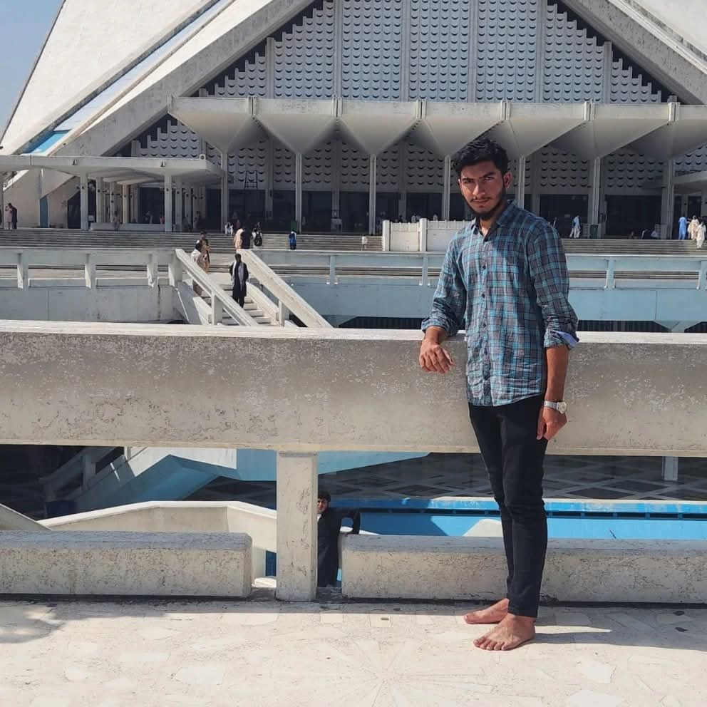

Islamabad
Pakistan's capital nestled in the Margalla Hills. Blend of modern architecture and natural beauty.
📅 Best Time to Visit
October to March
🛡️ Safety Information
Generally very safe. Well-developed infrastructure.
✈️ Traveler Tips
Visit Faisal Mosque at sunset. Bring hiking gear for Margalla trails.
🎬 Destination Videos
Watch travel vlogs and documentaries about this beautiful destination.
📰 Media Coverage & Reviews
See what travel magazines, news outlets, and vloggers are saying about this destination.
📖 Magazine
-
Faisal Mosque - UNESCO →
Source: Wikipedia
📡 News
-
Margalla Hills - Travel Guide →
Source: Wikipedia
My Travel Experiences in Islamabad
Shah Allah Ditta Caves
"Ancient Buddhist cave hermitages in the Margalla Hills. Peaceful walk through history."

Lal Masjid
"The Red Mosque — iconic twin minarets. Visited the library and courtyard."
Faisal Mosque
"Visited on Independence Day eve. Faisal Mosque glowing at dusk."

Pakistan Monument
"Reminds us the indenpendence and struggle"